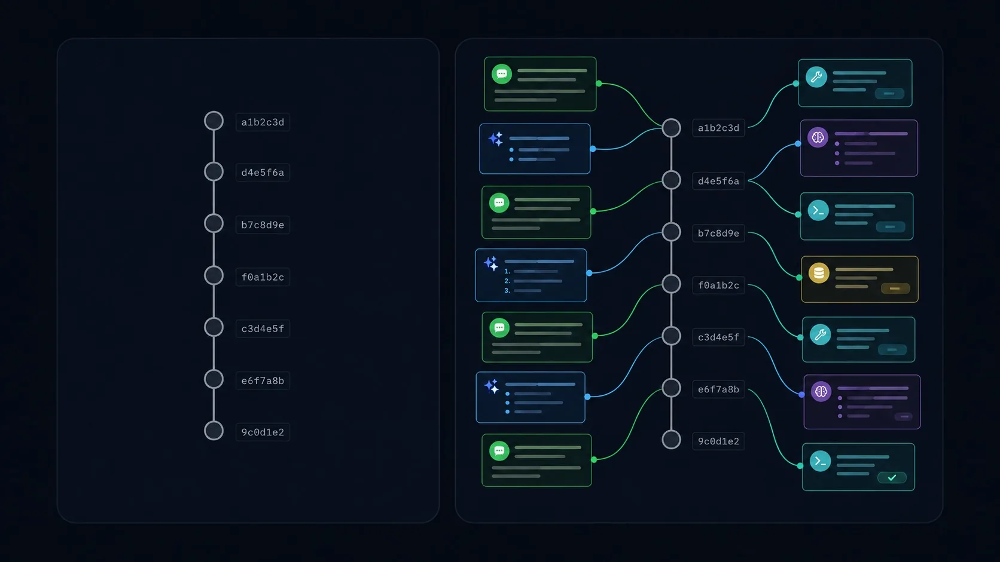

Why Entire Exists
You just spent forty minutes with an AI coding agent. It rewrote a parser, tested three approaches, discarded two, refactored the survivor, and landed four commits. The code is better than what you started with. Then the session ends, and everything that is not a file change evaporates. The reasoning, the false starts, the prompts that steered it, the tool calls that built it — gone. You are left with diffs and no memory of intent. That gap is the problem Entire exists to close.
The shift to agent-heavy workflows
Draw two timelines on the whiteboard. The first is the software development lifecycle you already know: a human reads a ticket, thinks about it, writes code, runs tests, opens a pull request. Every artifact in that chain — the ticket, the branch, the PR description, the review comments — is a durable record created by a person who can be asked "why did you do it this way?" six months later.
The second timeline is the one showing up in more and more teams. A developer opens Claude Code, Cursor, GitHub Copilot, or another AI coding agent. They describe the task in natural language. The agent reads files, proposes changes, runs tests, hits errors, tries again, and eventually lands a working result. The developer reviews the output and commits. This loop is not replacing the first timeline — it is layering on top of it. The human is still deciding what to build and whether the result is correct, but the agent is doing a growing share of the actual authoring.
Here is the problem: the tooling around that second timeline was designed for the first one. Git tracks file changes. Pull requests show diffs. CI runs tests against committed code. None of these systems know that an AI agent was involved, what it was told, what it tried, or why it made the choices it made. The agent session — which is where all of that context lives — is ephemeral by default. It exists only for the duration of the interaction, and then it is discarded.
What vanishes when the session ends
Think about what a coding agent actually does during a session. It receives prompts from you. It reads files from the repository. It calls tools — search, edit, run tests, check types. It reasons about the results, sometimes out loud, sometimes internally. It tries approaches that fail, backs up, and tries different ones. It makes decisions: "I will use a map here instead of a list because the lookup pattern is random-access." All of this happens inside the session. None of it lands in the git history.
When that session closes, four categories of information disappear.
1. The reasoning behind decisions
A commit message might say refactor: extract parser into separate module.
That tells you what. It does not tell you that the agent considered three
other decomposition strategies, that it chose this one because the test coverage for
the parser was low and isolating it made targeted tests possible, or that the
developer's prompt specifically asked for better testability. The decision had a
rationale, and the rationale is gone.
2. The failed approaches
The agent tried a recursive descent parser first. It compiled, but it could not handle nested expressions without blowing the stack on inputs above a certain depth. So the agent switched to an iterative approach with an explicit stack. The final code shows only the iterative version. Six months from now, a new developer will look at it, think "this would be cleaner as recursive descent," and spend a day discovering the same limitation. The failed experiment was valuable context, and it vanished.
3. The prompts and constraints
The developer told the agent: "Do not use any external dependencies. This module needs to stay zero-dep because it ships as part of the CLI binary." That constraint shaped every decision the agent made. Without it, a reviewer looking at the code might reasonably ask: "Why did you hand-roll this instead of pulling in a well-tested library?" The answer existed in a prompt that no one can see anymore.
4. The chain of tool calls
The agent read fourteen files, ran the test suite three times, searched for usages of a deprecated function, and checked the type definitions in two packages. That sequence of tool calls is the agent's investigative process — the equivalent of a developer's browsing history through the codebase. It reveals what the agent considered, what it looked at and ignored, and what information it used to make its choices. After the session, it is all gone.
Git remembers what changed. Entire remembers why. The one-line case for durable sessions
What Git preserves vs. what vanishes
Put it in a table, because the asymmetry is striking once you lay it out.
| Dimension | Git preserves | Vanishes with the session |
|---|---|---|
| File changes | Full diff of every committed file | — |
| Commit metadata | Author, timestamp, message | — |
| Decision rationale | — | Why this approach was chosen over alternatives |
| Failed attempts | — | Approaches tried and discarded before the final code |
| Prompts | — | The natural-language instructions that shaped the output |
| Constraints | — | "No external deps," "must be backwards-compatible," etc. |
| Tool calls | — | Files read, searches run, tests executed, errors hit |
| Conversation flow | — | The back-and-forth between developer and agent |
| Agent identity | — | Which agent, which model, which configuration |
Look at that table. The left column has two rows. The right column has seven. Git was designed for a world where the author of a change is a person who carries the context in their head. In an agent-heavy workflow, the "author" is a model that retains nothing between sessions. The context is either recorded or it is lost, and right now, by default, it is lost.
The gap, drawn as a picture
Here is what the situation looks like on the whiteboard. On the left, the git timeline: a clean chain of commits, each one a snapshot of what the code looked like at a point in time. On the right, the session that produced those commits: a rich, branching record of conversation, tool calls, reasoning, and decisions. The two exist in parallel during the session. After the session, only the left side survives.

A dark flat-vector editorial illustration on a deep navy-black (#0d1117) background, split into two side-by-side panels. Left panel: a single vertical git log — a chain of small circular commit nodes connected by thin grey lines, each node labelled only with a short hash, sterile and information-sparse. Right panel: the same commit chain, but now each node radiates thin green (#00d68f) and teal (#38bdf8) arcs connecting to floating context cards — a prompt snippet, a reasoning trace, a tool-call badge — forming a rich web of intent around the same history. No baked-in text. Target size ~1280×720px, 16:9 landscape.
Generate this with your image agent, then drop the file here.
The cost of losing context
You might be thinking: "I have been working without session history just fine. Git blame tells me who changed a line. Commit messages explain why. Pull request descriptions fill in the rest." That was a reasonable position when every line of code was typed by a human who chose each character deliberately. It stops being reasonable the moment an agent is writing significant portions of your codebase, because the agent does not persist its own reasoning.
Consider four activities that depend on understanding why code looks the way it does.
Onboarding. A new developer joins the team and needs to
understand the authentication module. They run git log and see twenty
commits over the past month. Half of them were produced by AI agents in sessions that
no longer exist. The commit messages say things like "refactor auth middleware" and
"add token refresh logic." There is no way to ask: what was the agent told to
optimize for? What constraints were given? What alternatives were considered? The new
developer has to reverse-engineer intent from the code itself, which is exactly the
expensive, error-prone process that documentation is supposed to prevent.
Debugging. A production bug traces back to a function that was rewritten by an agent three weeks ago. The old version handled a specific edge case. The new version does not. Was the edge case discussed in the session? Did the agent consider it and decide it was not relevant? Did the developer's prompt accidentally exclude it? Without the session, you cannot distinguish between "the agent made an informed decision to drop this" and "the agent never knew about it." The debugging path is different in each case, and you are guessing.
Code review. A pull request arrives with 400 lines of agent-generated code. The reviewer can see what the code does. They cannot see the conversation that produced it: the initial prompt, the corrections, the constraints, the tool calls that informed the approach. Reviewing code without knowing why it was written this way means reviewing syntax and structure, not decisions. That is the least valuable kind of review.
Auditing. In regulated environments, you need to know not just what changed but who decided it should change and on what basis. When an agent produces a commit, the audit trail says a human authored it — because the human is the git author. The actual decision process — the prompt, the agent's reasoning, the developer's approval — is invisible to any compliance tool that reads git history.
"We will just write better commit messages" is not a solution. A commit message is a summary written after the fact. It cannot capture the branching, exploratory, trial-and-error nature of an agent session. Asking a developer to manually transcribe the reasoning from a forty-minute session into a commit message is asking them to do the work the tool should be doing, and they will stop doing it by week two.
This is not a logging problem
You could log agent sessions to a file. Some tools already do. But a raw log of every API call, every token, and every intermediate step is not useful context — it is noise. What you need is structured, linked, searchable context that connects back to the code it produced. You need to be able to start from a line of code, trace it to a commit, and from that commit reach the session, the checkpoint, the prompt, and the reasoning that created it.
That is a different problem from logging. Logging gives you a wall of text. What you want is a graph: code on one side, intent on the other, with edges connecting them. And you want it stored where the code already lives — in git — so it is versioned, searchable, and does not require a separate system to maintain.
The problem Entire solves is not "sessions are not saved." It is "sessions are not connected to the code they produce." The value is in the linkage — from a commit to the reasoning that caused it, and from a session back to the diffs it generated. Without linkage, even a saved session is just a transcript sitting in a drawer.
The shape of the solution
Entire is a CLI tool that records agent sessions and stores them as checkpoints on a separate git branch, linked to the commits they produced. It is not a plugin for a specific agent. It is not a SaaS platform that stores your data elsewhere. It is a command-line utility that writes structured metadata into your existing git repository, on a branch that stays out of your way until you need it.
The details of how that works — sessions, checkpoints, commit linkage, the checkpoint branch — are the subject of Chapter 2. Before we get there, make sure the problem is sharp in your mind: AI coding agents are becoming a normal part of software development, the sessions they run in are ephemeral by default, and the context they contain is valuable for onboarding, debugging, review, and audit. Git was designed for a world of human authors who carry context in their heads. The tooling has not caught up to a world where a significant author — the agent — remembers nothing.
If you want to feel the problem before reading further, try this: open your git log for a project where you have used an AI coding agent. Pick a commit that the agent produced. Now try to answer: what prompt led to this change? What alternatives were considered? What files did the agent read before writing this code? If you cannot answer those questions, you have already experienced the vanishing session problem.
What to take away
- Software development is shifting from human-only authorship to a mix of human direction and agent execution. The tooling around that workflow was built for the first model.
- When an AI agent session ends, four things vanish: the reasoning behind decisions, the failed approaches, the prompts and constraints, and the chain of tool calls.
- Git preserves file changes and commit metadata. It does not preserve anything about the process that produced those changes.
- This loss has concrete costs: harder onboarding, slower debugging, shallower code review, and invisible audit trails.
- The solution is not logging — it is structured, linked, git-native context that connects code to the reasoning that wrote it.
- Entire is a CLI that does exactly that. Chapter 2 explains how.